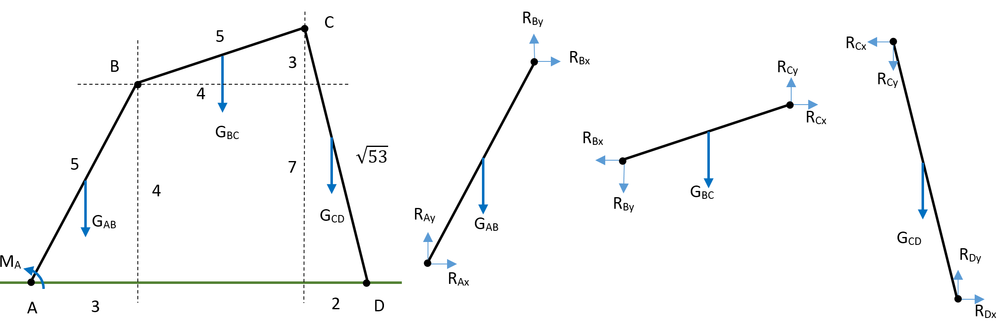
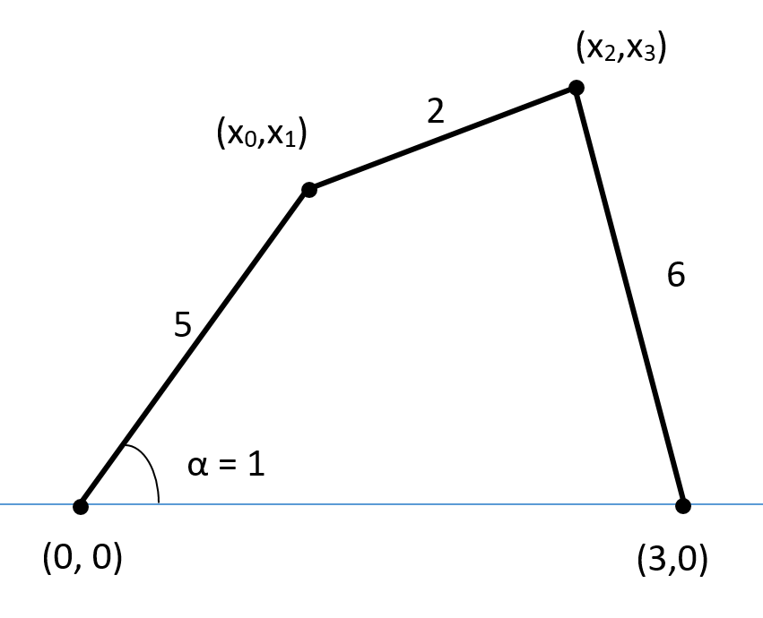

Pliki do wykorzystania w poniższym ćwiczeniu można pobrać za pomocą poniższych linków:
Rozwiązanie wielu problemów inżynierskich wymaga rozwiązania nieliniowych układów równań (wśród których choć jedno równanie jest równaniem nieliniowym). Dzisiejsze laboratorium będzie poświęcone metodzie Newtona-Raphsona pozwalającej rozwiązywać takie zagadnienia. W celu przypomnienia podstawowych zagadnień zaczniemy od problemu liniowego wypływającego ze statyki mechanizmu po uwolnieniu poszczególnych członów od więzów. Umiejętność rozwiązania zagadnienia liniowego jest nieodzownym elementem implementacji metody Newtona-Raphsona.
 Rozważmy mechanizm pokazany na rysunku i uwolnijmy ten układ od więzów, uwydatniając siły w parach kinematycznych. Znana jest geometria układu oraz ciężary poszczególnych członów wynoszące \(G_{AB}=25\), \(G_{BC}=16\) oraz \(G_{CD}=53\).
Dla układu o zadanej na rysunku geometrii oraz ciężarach członów podanych powyżej równania równowagi wyglądają następująco: \[ \begin{array}{rrrrrrrrrl} R_{Ax}&&&+R_{Bx}&&&&& &= 0 \\ &R_{Ay}&&&+R_{By}&&&& &= G_{AB} \\ &&M_A&-4R_{Bx}&+3R_{By}&&&& &=+1.5G_{AB} \\ &&&-R_{Bx}&&+R_{Cx}&&& &=0 \\ &&&&-R_{By}&&+R_{Cy}&& &=G_{BC} \\ &&&&&-3R_{Cx}&+4R_{Cy}&& &=G_{BC} \\ &&&&&-R_{Cx}&&+R_{Dx}& &=0 \\ &&&&&&-R_{Cy}&&+R_{Dy}&=G_{CD} \\ &&&&&&&+7R_{Dx}&+2R_{Dy}&=-G_{CD} \\ \end{array} \]
W postaci macierzowej układ równań ma postać: \[ \left[ \begin{array}{c c c c c c c c c} 1 & 0 & 0 & 1 & 0 & 0 & 0 & 0 & 0 \\ 0 & 1 & 0 & 0 & 1 & 0 & 0 & 0 & 0 \\ 0 & 0 & 1 & -4 & 3 & 0 & 0 & 0 & 0 \\ 0 & 0 & 0 & -1 & 0 & 1 & 0 & 0 & 0 \\ 0 & 0 & 0 & 0 & -1 & 0 & 1 & 0 & 0 \\ 0 & 0 & 0 & 0 & 0 & -3 & 4 & 0 & 0 \\ 0 & 0 & 0 & 0 & 0 & -1 & 0 & 1 & 0 \\ 0 & 0 & 0 & 0 & 0 & 0 & -1 & 0 & 1 \\ 0 & 0 & 0 & 0 & 0 & 0 & 0 & 7 & 2 \\ \end{array} \right] \left[ \begin{array}{c} R_{Ax} \\ R_{Ay} \\ M_A \\ R_{Bx} \\ R_{By} \\ R_{Cx} \\ R_{Cy} \\ R_{Dx} \\ R_{Dy} \\ \end{array} \right] = \left[ \begin{array}{c} 0 \\ 25 \\ 37.5 \\ 0 \\ 16 \\ 32 \\ 0 \\ 53 \\ 53 \\ \end{array} \right] \]
Napisz program w C, który obliczy siły i momenty przenoszone w parach kinematycznych. Do rozwiązania układu równań wykorzystaj metodę eliminacji Gaussa, której implementacja jest dostępna w pliku gauss.cpp. (Uwaga: Funkcja gauss(int N, double **A, double *x, double *b) przyjmuje podwójny wskaźnik do macierzy - z tego względu pamiętaj o zaalokowaniu dynamicznym dwuwymiarowej tablicy - tablica statyczna miałaby typ niezgodny z nagłówkiem funkcji). Sprawdź, czy otrzymujesz poprawne rozwiązanie wynoszące:
\[\left[ \begin{array}{c} R_{Ax} \\ R_{Ay} \\ M_A \\ R_{Bx} \\ R_{By} \\ R_{Cx} \\ R_{Cy} \\ R_{Dx} \\ R_{Dy} \\ \end{array} \right] = \left[ \begin{array}{c} 8.117647 \\ 39.088235 \\ 47.294118 \\ - 8.117647 \\ - 14.088235 \\ - 8.117647 \\ 1.911765 \\ - 8.117647 \\ 54.911765 \\ \end{array} \right]\]
Metoda Newtona-Raphsona wynika z rozwinięcia funkcji wielu zmiennych w szereg Taylora, ucięcia go po członie liniowym i zapostulowania, że nieznany przyrost argumentów ma być taki, aby funkcja miała w tym miejscu wartość zero. Zapiszmy takie rozwinięcie dla funkcji \(F(\vec x)\), gdzie \(\vec x = [x,y]\), a \(\vec h = [h_x, h_y]\). \[ F(\vec x_0 + \vec h) = F(\vec x_0) + \frac{\partial F}{\partial x} h_x + \frac{\partial F}{\partial y} h_y + \ldots \] W zapisie indeksowym napiszemy dla funkcji \(F_i\) (może tych funkcji być cały wektor dla \(i = 1, \ldots, n\)) \[ F_i(\vec x_0 + \vec h) = F_i(\vec x_0) + \sum_{j=1}^n \frac{\partial F_i}{\partial x_j} h_j + ... \]
Wiemy, że z pochodnych \(\frac{\partial F_i}{\partial x_j}\) można utworzyć macierz Jacobiego. Będzie to macierz kwadratowa, jako że rozwiązujemy zagadnienie mające tyle samo równań co niewiadomych. Przyrównujemy rozwinięcie do zera - pozwoli nam to wyznaczyć takie przesunięcie argumentów, że gdyby liniowe rozwinięcie funkcji wokół danego punktu było słuszne, to w jednej iteracji otrzymywalibyśmy dokładne rozwiązanie zadania. Otrzymujemy: \[ F_i(\vec{x_0} + \vec{h}) = F_i(\vec{x_0}) + \sum_{j=1}^n \frac{\partial F_i}{\partial x_j} h_j = 0 \] i tym samym \[ \sum_{j=1}^n \frac{\partial F_i}{\partial x_j} h_j = - F_i(\vec x_0) \] W postaci macierzowej: \[ \left( \begin{array}{ccc} \frac{\partial F_1}{\partial x_1} & \cdots & \frac{\partial F_1}{\partial x_n} \\ \vdots & \ddots & \vdots \\ \frac{\partial F_n}{\partial x_1} & \cdots & \frac{\partial F_n}{\partial x_n} \\ \end{array} \right) \cdot \left( \begin{array}{c} h_1 \\ \vdots \\ h_n \\ \end{array} \right) = - \left( \begin{array}{c} F_1 \\ \vdots \\ F_n \\ \end{array} \right) \]
Proces iteracyjny dla metody Newtona-Raphsona ma następującą postać:
Uwaga: Metoda Newtona-Raphsona jest niezawsze zbieżna.

Zajmijmy się teraz czworobokiem przegubowym pokazanym powyżej i rozważmy zadanie o położeniach (patrz: TMM I). Zadanie o położeniach zawsze prowadzi do układu równań nieliniowych. Do jego rozwiązania wykorzystamy metodę Newtona-Raphsona. Układ rozważymy we współrzędnych naturalnych (nieznanymi wielkościami będą współrzędne punktów \((x_0,x_1)\) i \((x_2,x_3)\), a równania więzów będą wynikać z odchylenia członu kierującego o kąt \(\alpha\) od poziomu oraz długości dwóch pozostałych członów). Tym samym równania członów są postaci: \[ \begin{aligned} x_0 &= 5 \cos\alpha \\ x_1 &= 5 \sin \alpha \\ (x_2-x_0)^2 + (x_3-x_1)^2 &= 4 \\ (3-x_2)^2 + (x_3-0)^2 &= 36 \end{aligned} \] Po rozwinięciu i zapisaniu całego układu w postaci funkcji wektorowej wektorowego argumentu otrzymamy następujące sformułowanie naszego układu równań: \(\vec F(\vec x) = \vec 0\), gdzie \[ \vec F(\vec x) = \left[ \begin{array}{c} x_0 - 5 \cos\alpha \\ x_1 - 5 \sin \alpha \\ x_2^2-2x_0 x_2 + x_0^2 + x_3^2-2x_1 x_3 +x_1^2 -4 \\ -6x_2+x_2^2+x_3^2-27 \end{array} \right] \] Wyprowadziwszy powyższe równania możemy analitycznie obliczyć macierz Jacobiego: \[ J = \frac{\partial \vec F}{\partial \vec x} = \left[ \begin{array}{c c c c} 1 & 0 & 0 & 0 \\ 0 & 1 & 0 & 0 \\ -2x_2+2x_0 & -2x_3+2x_1 & -2x_0+2x_2 & -2x_1+2x_3 \\ 0 & 0 & -6+2x_2 & 2x_3 \\ \end{array} \right] \]
Napisz program, który rozwiąże zadanie o położeniach przy wykorzystaniu metody Newtona-Raphsona. W tym celu stwórz następujące funkcje:
void Constraints(double *x, double *F);void JacobiMatrix(double **J, double *x);void NewtonRaphson(double *x);Zmodyfikuj program tak, aby nie wymagał analitycznego obliczenia macierzy Jacobiego, ale mógł numerycznie obliczyć tę macierz. W tym celu stwórz dodatkową funkcję void JacobiMatrixFD(double **J, double *x); przybliżającą poprawną macierz Jacobiego macierzą obliczoną z użyciem metody różnic skończonych (ang. finite difference). Można tego dokonać z użyciem algorytmu zapisanego w poniższym pseudokodzie (metoda różnic skończonych 2-ego rzędu):
W ramach testów sprawdź, czy macierz Jacobiego dla punktu startowego obliczona metodą dokładną i numeryczną ma te same wartości. Dla punktu startowego \(\vec x = [0, 5, 3, 6]\) macierz Jacobiego ma postać \[ J = \left[ \begin{array}{c c c c} 1 & 0 & 0 & 0 \\ 0 & 1 & 0 & 0 \\ -6 & -2 & 6 &2 \\ 0 & 0 & 0 & 12 \\ \end{array} \right] \]